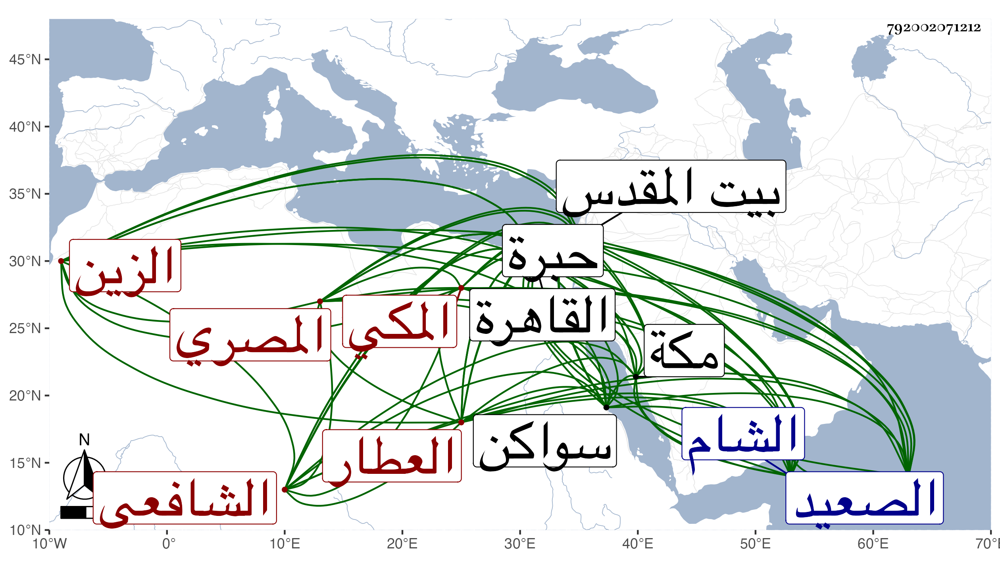

0902Sakhawi.DawLamic.ITO20230111-ara1.EIS1600.792002071212
Biography ID: 792002071212
922
عبد اللطيف بن الجمال محمد بن أحمد بن علي الزين المصري الأصل المكي الشافعي شقيق عبد الرحمن الماضي العطار أبوهما ورأيت من نسبه الشريفي ويعرف بالحجازي ، ولد كما أخبرني به ولده ياسين في تاسع عشر ذي القعدة وثمانمائة ورأيت من يقول بل قبلها بمكة ، ونشأ بها فقرأ القرآن وجوده على جماعة منهم الشيخ محمد الكيلاني وسمع الحديث على أبي الفتح المراغي والتقي بن فهد وغيرهما ، وقدم القاهرة مرارا أولها قريب الخمسين وآخرها في سنة ثمانين ، وسمع بها على شيخنا وغيره ، بل دخل الشام والصعيد وزار بيت المقدس والخليل ودخل بر سواكن ، وتزوج هناك وهو ممن أعرفه قديما ، وحضر مجالسي بالقاهرة بل قرأ علي بأخرة في لطائف المنن وتكسب في بلده بالشهادة ولا بأس به فيها ، وآل أمره إلى أن كف وانقطع بمنزله مديما للتلاوة لما يحفظه حتى مات في ليلة صفر سنة أربع وتسعين وصلى عليه من الغد . ثم دفن رحمه الله وإيانا .
